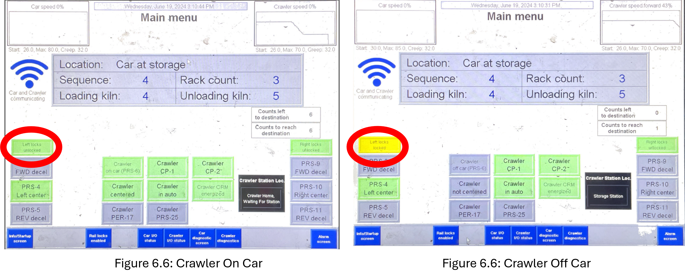
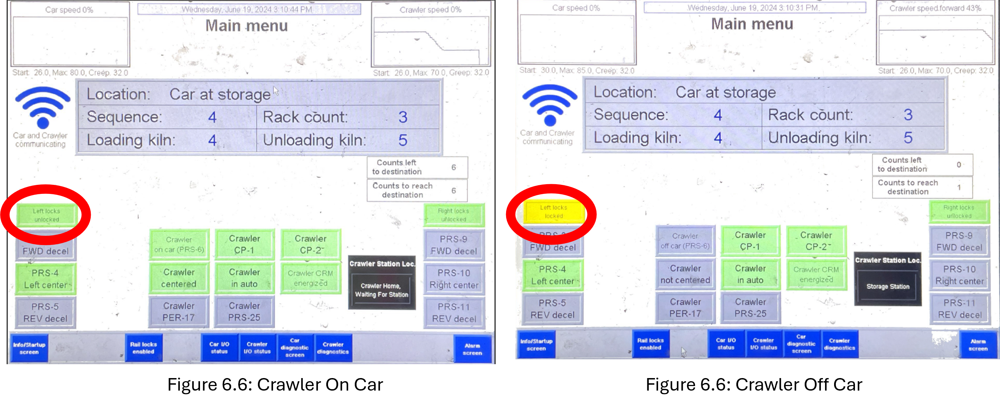

Wait until the crawler has loaded its first rack onto the new loading bay and has just retrieved its unloading rack. Flip the car control switch to the “Hand” position (Green circle in Figure 6.2).
Use the lever on the second row to move the car to the “reverse” position (Red circle in Figure 6.3). You can press the “Manual Accel” button to speed the car up (Pink circle in Figure 6.3).
hold the “Reverse” lever from step 6.2 until the “Car Centered Left” button lights up (Figure 6.4).
Flip the “Left Raillocks” switch to the “Lock” position (Purple arrow in Figure 6.5) and hold it at that position until you see the “Left Locks Locked” box (Red circles in Figure 6.6).
Figure 6.7 is what the loading bay should now look like.
Once the crawler comes back to the car, unlock the raillocks (Purple arrow in Figure 6.8), and move the car forward back to the unloading bay. Lock the left raillocks again, making the crawler unload the next rack.
While the crawler is dropping off the final rack, go to the “Program Car” page (Red circle in Figure 6.9).
Press on the blue box to the right of the “Location” label until the box says, “Car at Loader” (Yellow circle in Figure 6.10).
Flip the Control switch back to the “Auto” position. Hit the “Pump Auto Start” button (Purple circle in Figure 6.11).
Go to the kiln door control panel. Flip the control switch to “Auto” and press the “Auto Start” button (Red circle in Figure 6.12).


 
